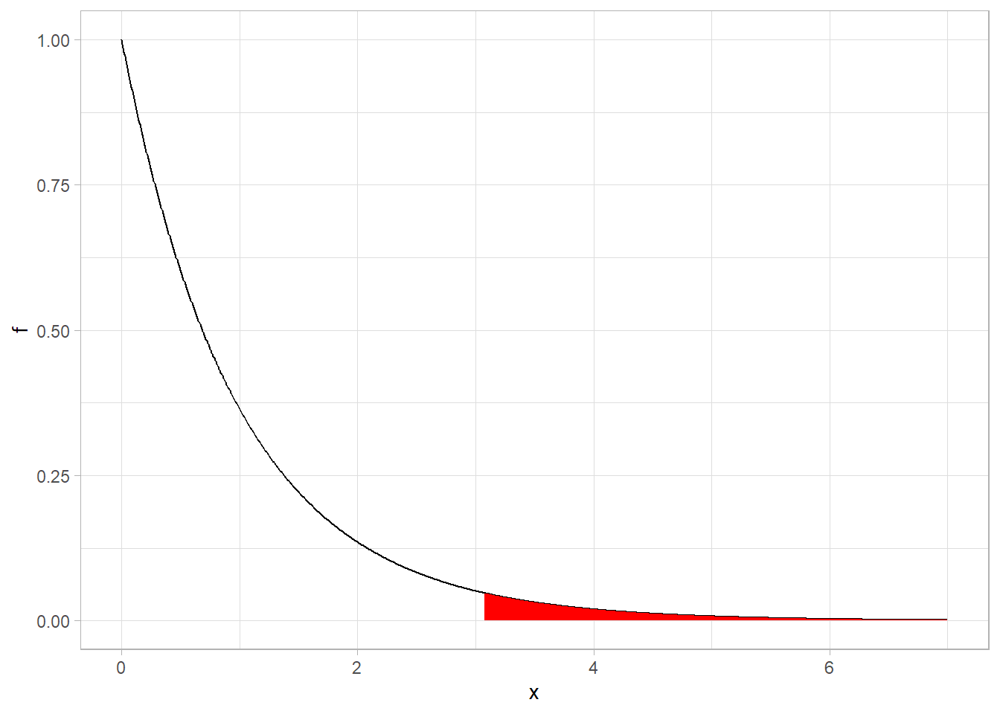
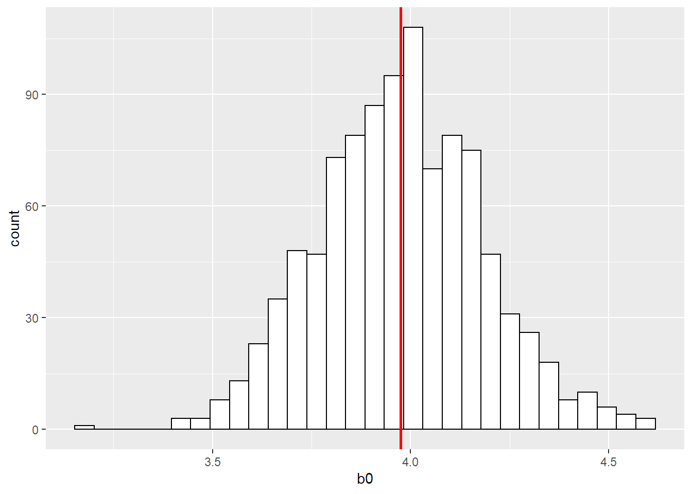

Non Negative Matrix Factorization
Please follow this link
It was made with Flexboard (a package to do dashboards in R) so I think it's only visualized correctly in laptops/pc because of the layout.
Please follow this link
It was made with Flexboard (a package to do dashboards in R) so I think it's only visualized correctly in laptops/pc because of the layout.
Basado en:
http://www.mas.ncl.ac.uk/~nmf16/teaching/mas3301/week6.pdf
http://www.inf.ed.ac.uk/teaching/courses/mlpr/assignments/multinomial.pdf
La distribución Dirichlet es una distribución multivariada para un conjunto de cantidades \(\theta_i,...,\theta_m\) donde \(\theta_i >= 0\) y \(\sum_{i=1}^m \theta_i = 1\). Esto la hace una candidata útil para modelar un conjunto de probabilidades de una partición (un un conjunto de eventos mutuamente excluyentes). Es decir, un grupo de probabilides de eventos excluyentes, que sumen 1.
Podemos remplazar los \(\theta\) por \(p\) si es más claro que hablamos de probabilidades luego.
La PDF es:
Donde la función \(\Gamma\) es \(\Gamma(\alpha) = (\alpha -1)!\). Para más detalles ver acá.
Los \(\alpha_i\) son parámetros de la distribución y deben ser mayores a 0.
Cuando m = 2, obtenemos una función \(beta(\alpha_1, \alpha_2)\) como caso particular de la Dirichlet.
De la misma manera que la distribución Beta suele usarse como prior de la Distribución Binomial ya que es una distribución conjugada para ese caso, la distribución Dirichlet suele usarse para distribuciones Multinomiales, es decir donde hay más de 2 categorías posibles (más de 2 \(p_i\)). También es distribución conjugada. Es simplemente la versión multinomial de la beta.
La distribución multinomial es la siguiente:
Cuando m = 2, es la distribución binomial.
Si tuvieramos un experimento que se puede modelar como una multinomial y queremos estimar los \(p_i\) podemos utilizar los estimadores de máxima verosimilitud (frecuentista) o ir por el camino de bayesiano donde comenzamos con un prior para cada p, que modelaremos con la Dirichlet. El prior de cada \(p_i\) va a ser definido con la elección de los \(\alpha\).
Yendo por el camino bayesiano vamos a tener nuestra distribución posterior: $$ P(p | x) \propto P(x|p) * P(p)$$ donde \(P(x|p)\) no es otra cosa que la distribución multinomial y \(P(p)\) es nuestro prior de \(p\) dado por la Dirichlet. Omitimos el denominador que es normalizador ya que es una constante.
Multiplicamos entonces la PDF multinomial por la Dirichlet y obtenemos:
Importante notar que efectivamente cambiamos \(\theta\) por \(p\) en la Dirichlet para que sea consistente con la multinomial.
Para la proporcionalidad, quitamos todo lo que es factorial (y \(\Gamma\)) ya que es constante y combinamos los exponentes de base \(p_i\).
Vemos entonces que nuestra distribución posterior es propocional a ese término, que si vemos, es una Dirichlet para la cual nos falta el término constante! Por eso se dice que es una prior conjugada, ya que la posterior es de la misma familia que la prior (con otros valores claro.)
Es entonces una Dirichlet con parámetros \(\alpha_i + x_i\) y podemos completar el término faltante obteniendo:
$$ \frac{\Gamma(\sum_i{\alpha_i + x_i})}{\prod_{i=1}^m \Gamma(\alpha_i + x_i)}\prod_{i=1}^m p_i^{(\alpha_i + x_i-1)}$$
He ahí nuestra distribución posterior para los valores de \(p\) de la multinomial.
Para calcular rápidamente la esperanza de cada \(p_i\) hacemos simplemente: \(\(E(p_i) = \frac{\alpha_i + x_i}{\sum (\alpha_i + x_i)}\)\)
Si obtenemos nueva información podemos repetir el proceso, pero nuestra nueva prior debería ser la posterior previamente calculada. Y así vamos agregando información a medida que se recolecta y actualizando nuestra inferencia acerca de \(p_i\)
Aclaración: La proporción de cada \(\alpha_i\) iniciales en la Dirichlet prior sobre la suma de todos los \(\alpha_i\) es nuestro prior de \(p_i\). A mayores valores absolutos, mayor peso al prior respecto a los datos, ya que nuestro nuevo \(p_i\) es función del \(\alpha_i\) y \(x_i\). Revisar bien como ajustar los \(alpha\) según la magnitud de \(x\), si es que hay que hacerlo.
Queremos modelar la compra de remeras de basquet en una tienda. Entra un cliente al azar y tiene determinadas probabilidades de comprar una remera de los Lakers, una de los Celtics, una de San Antonio o cualquier otro equipo.
En un primer momento no sabemos las proporciones y empezamos con unos priors \(\alpha_1 : \alpha_4 = [8,6,4,2]\) que corresponde a 40%, 30%, 20% y 10% respectivamente.
Recolectamos los datos de 100 clientes y vemos que las ventas fueron las siguientes:
Lakers : 45
Celtics: 22
Spurs: 27
Otros: 6
Calculando rapidamente con la fórmula de la Esperanza las probabildades que se derivan de nuestra posterior obtenemos:
Lakers = 0.442
Celtic = 0.233
Spurs = 0.258
Otro = 0.067
Para ser más prolijos habría que agregar la varianza de cada \(p\). A agregar en un futuro..
Si hubieramos calculado los p de máxima verosimilitud no sería más que la proporción de cada equipo en los datos, sin tener en cuenta nuestro prior. Vemos que acá están obviamente cercanos a la proporción en los datos pero se inclinan hacia el prior. Recordar que el peso de los priors va a verse afectar por los \(\alpha\) elegidos y por la cantidad de datos recolectados.
En ML es bastante útil para el caso donde una nueva categoría aparece en el test set. Si no fue vista en el training le va a dar probabilidad 0 mientras que con un prior podemos salvar ese problema.
En NLP es bastante habitual usar la distribución Dirichlet como prior. Investigar por ese lado.
Serie que documenta cuestiones prácticas que voy descubriendo a medida que empiezo a incursionar en Python un poco más enserio. Son más que nada recordatorios para el futuro de mecánicas que hoy entiendo, pero me voy a olvidar.
Muchos de los objetos no van a tener relación entre sí o no se puede correr el código directo ya que son copy/paste random de scripts.
Si uno genera modelos, dataframes, etc en otro script por prolijidad y quiere utilizarlos en el principal (o cualquiera en realidad) lo aconsejable es exportarlo como objeto pickle (algo asi como los RDS en R.)
import pickle
import pandas as pd
# exportar. Objeto, archivo, permisos
pickle.dump(OBJETO, open("working/qualifying.p", "wb"))
# importar
leer = pd.read_pickle('archivo.p')
Para seleccionar columnas basados en si contiene determinado string en su nombre y no solo por nombre completo o por índice.
# Recordemos que iloc selecciona por índice
# Función Lambda que convierte el indice de columna en strings y devuelve mascara (True/false)
# si contiene determinado patrón. Creo que puede ponerse cualquier Regex
df2 = df.iloc[:, lambda df:df.columns.str.contains('_points')] # select column based on name
Si queremos combinar esto con otras columnas con otro patrón no encontré manera más sencilla por el momento que combinar por separado. Quizás es muy tedioso si son muchas.
# Notar que en point_vars le pasamos la máscara al listado de columnas nuevamente
# para quedarnos con el nombre real y poder sumarlo a las otras listas
# luego lo convertimos en lista porque el objeto es de tipo índice si no.
target = ['position']
qualy_vars = ['grid', 'dif_to_min_perc']
point_vars = list(results.columns[results.columns.str.contains('_points')])
vars_keep = target + qualy_vars + point_vars
Los DF vienen por default con un índice. Si uno trabaja con una copia del DF original para generar nuevas columnas el índice se mantiene (si no lo reseteamos claro). También útil si se tienen varias tablas con mismo índice.
Esto permite juntar tablas sin tener que hacer un merge explicito por determinadas columnas si no tenemos esos keys.
El equivalente de IFELSE en R para rapidamente crear una columna basado en otras, fila por fila.
import numpy as np
# = condicion, valor si True, valor si False
df['position'] = np.where(df['position'] > 1, 0, 1)
Útil para asegurar que sacan el target de las X...
df.replace
Permite aplicar una función por fila o columna.La funcion se aplica sobre la serie (la fila o columna) La serie mantiene los indices. Si usamos apply con axis = 1 que cada serie es una fila entera, podemos llamar a la celda correspondiente usando ['columna']
Apply es como las distintas versiones de apply de R y/o MAP del tidyverse cuando se aplica a un DF.
import pandas as pd
rectangles = [
{ 'height': 40, 'width': 10 },
{ 'height': 20, 'width': 9 },
{ 'height': 3.4, 'width': 4 }
]
rectangles_df = pd.DataFrame(rectangles)
rectangles_df
# Suma de todas las celdas ("filas") por columna
suma_por_columna = rectangles_df.apply(sum)
print(suma_por_columna)
# Suma de todas las celdas ("columnas") por filas
import pandas as pd
rectangles = [
{ 'height': 40, 'width': 10 },
{ 'height': 20, 'width': 9 },
{ 'height': 3.4, 'width': 4 }
]
rectangles_df = pd.DataFrame(rectangles)
def multiplicar_2(x):
return x*2
# Caso donde paso una funcion propia predefinida
rectangles_df.apply(multiplicar_2)
# Lo mismo pero definido en el momento
Como el bygroup de tidyverse.
# Equivalente a groupby(raceid) %>% summarise(newcol = min(best_qualy_ms))
min_qualy_by_race = qualifying.groupby('raceId')['best_qualy_ms'].min()
# suma acumulada de los ultimos 4 periodos (rolling)
# luego el gorupby(level = 0).shift() es para lagearlo por grupo
# el ultimo reset_index es para quitar el indice de este ultimo agrupado
driver_points.groupby('driverId')['points'].rolling(4, min_periods = 4).sum().groupby(level = 0).shift().fillna(0).reset_index(level = 0)['points']
ANOVA refiere a "Analysis of Variance" en inglés y corresponde a una serie de procedimientos estadísiticos que permiten estudiar diferencias de medias poblacionales, basado en muestras.
Es una técnica muy difundida para comparar medias de 2 o más grupos. Específicamente queremos ver
si todos los grupos comparten media o al menos uno difiere. En el caso más simple, de comparar dos medias, el resultado es equivalente al test t de comparación de medias por lo que ANOVA se considera una generalización de este.
El test de hipótesis sería: \(\(H_0: \mu_1 = ... = \mu_k\)\) \(\(H_1: \text{las medias no son iguales}\)\) ANOVA tiene también una serie de supuestos que hay que tener en cuenta.
Generamos primero un set de datos donde la media de 3 grupos es distinta y vamos paso a paso con los cálculos.
set.seed(24)
df = data.frame(grupo1 = rnorm(n = 35, mean = 3, sd = 1),
grupo2 = rnorm(n = 35, mean = 6, sd = 1),
grupo3 = rnorm(n = 35, mean = 9, sd = 1))
Tenemos 3 grupos de 35 observaciones, cada uno proveniente de poblaciones con medias notoriamente distintas.
Veamos como resultaron las medias muestrales.
Viédolo gráficamente vemos que son muy dispares y ANOVA debería captar estas diferencias.
En el segundo gráfico, la linea vertical represnta la media general del dataset
 Veamos como resulta analizar esto con ANOVA.
Veamos como resulta analizar esto con ANOVA.
Obviamente existen paquetes estadísticos para realizar este análisis rapidamente pero iremos paso por paso.
La lógica es comparar la media de las poblaciones y para ello nos basamos en la varianza. Más precisamente en la descomposición de la varianza.
\(\(SC_{Total} = SC_{Entre} + SC_{Dentro}\)\) La suma de errores cuadrados de TODO el dataset se puede descomponer entre el desvío cuadrado de cada grupo frente a la media general (Entre) más el desvío cuadrado de cada observación respecto a su media grupal.
Siendo más intuitivos. Los suma de los desvíos cuadrados de cada observación respecto a la media general 5.91 pueden ser vistos como la diferencia entre medias grupales (qué tan lejos está cada pico del gráfico de la media grupal) más qué tan dispersos están los datos dentro de cada grupo.
Cuanto más grande sea la brecha entre la variabilidad entre grupos y la variabilidad al interior de los grupos, más probable es que las medias poblacionales sean distintas. Es decir, si la variabilidad total se explica más por la diferencia entre medias grupales que por la diferencia entre desviós al interior, entonces más evidencia en favor de distintas medias grupales. Si el ratio no es tan grande, entonces tenemos menos fuerza para afirmar tal cosa.
Para poder comparar correctamente, no se mira directamente \(SC_{Entre}\) vs \(SC_{Dentro}\) ya que estos dependen del tamaño de la muestra, sino que se los normaliza primero. \(SC_{Entre}\) se normaliza por sus grados de libertad siendo k-1 (cantidad de grupos menos 1) y \(SC_{Dentro}\) se normaliza con N-K (observaciones totales menos cantidad de grupos).
Detalle técnico
Como asumimos que los residuos son normales, entonces elevarlos al cuadrado nos devuelve una distribución Chi-Cuadrado. Las sumas de residuos al cuadrado son entones Chi-Cuadrado con los grados de libertad que mencionamos. Si dividimos dos distribuciones Chi-Cuadrado, normalizadas por sus grados de libertad, obtenemos una distribución F con grados de libertad equivalentes a los de ambas Chi-Cuadrado.
Ese estadístico F, que sigue la distribución recién mencionada sera nuestro estádistico para testear la Hipótesis.
Donde:
\(\(SC_{Entre} = \sum_{i=1}^k{n_i (\bar{x}_i} - \bar{x})^2\)\)
\(\(SC_{Dentro} = \sum_{i=1}^K\sum_{j=1}^{n_k}{(x_j - \bar{x}_i)^2}\)\)
Luego como en cualquier test de hipótesis, comparamos el estadístico F con la distribución teórica si la hipótesis nula fuera cierto y según el valor de alfa que hayamos elegido, rechazamos o no la hipótesis nula.
Para ilustrar, la dsitribución F tiene la siguiente forma con los grados de libertad de nuestro ejemplo.

Donde la región en rojo es el area de la curva posterior al 95% de la distribución. Si nuestro estadístico cae en la zona rojo podemos rechazar la hipótesis nula con alfa =0.05
Obtengamos los números con la función aov.
## Df Sum Sq Mean Sq F value Pr(>F)
## grupo 2 627.3 313.66 326 <2e-16 ***
## Residuals 102 98.1 0.96
## ---
## Signif. codes: 0 '***' 0.001 '**' 0.01 '*' 0.05 '.' 0.1 ' ' 1
La tabla que devuelve la función es justamente todo lo que fuimos viendo.
Sum Sq es la suma de desvíos cuadrados. La fila de grupo corresponde a Entre y Residuals corresponde a Dentro.
DF son los grados de libertad (K-1) y (N-K).
Mean Sq es la división de Sum Sq por sus grados de libertad. Serían el numerador y denominador del estadístico F.
F value es simplemente la división de los Mean Sq. Obtenemos un estadístico de 326(!). A partir de 3 aprox ya podíamos rechazar la hipótesis nula. El p-value (la última columna) es virtualmente 0.
Dado este resultado, podemos rechazar la hipótesis nula y asegurar con el 95% de confianza que las medias poblacionales no son iguales.
Era un caso medio extremo pero sirve de ejemplo.
Lo que no nos dice ANOVA es si todas son distintas o cuál es diferente al resto. Para ello hay que hacer estudios posteriores pero no entramos en detalles acá.

## Df Sum Sq Mean Sq F value Pr(>F)
## grupo 2 0.00 0.0014 0.001 0.999
## Residuals 102 98.14 0.9621
Aquí es el otro extremo. El valor del estadístico F es casi 0, por lo tanto el p-value es casi 1. No hay evidencia para rechazar la hipótesis nula.
ANOVA cómo método para comparar medias poblacionales es muy sencillo de aplicar y bastante robusto frente a inconsistencias en los supuestos. Permite dar una medida objetiva de si es posible o no rechazar la hipótesis nula, más allá de que uno pueda tener una primera impresión visual.
Para ir un paso más allá, ANOVA se puede relacionar directamnte con las regresiones lineales. Anova tal como lo presentamos es equivalente a correr una regresión donde la variable independiente es el grupo al que pertenece la observación. Las generalizaciones como ANCOVA, MANOVA, etc, también tienen su correlato en regresión. Esto sucede porque según el campo de estudio se eligieron caminos y convenciones distintos de análisis, llevando a distintas ramas que al final hacen lo mismo, pero genera confusión al intentar entender la estadística como un todo.
La distribución Gamma es continua y siempre positiva. Se parametriza con dos parámetros que deben ser positivos.
Lamentablemente no hay un consenso sobre cómo llamar a los parámetros y prevalecen dos formas, bastante similares pero con distinto origen.
La relación entre ambas es \(k = \alpha\) y \(\theta = 1/\beta\).
Obviamente cualquiera que se use va a resultar en los mismos resultados, pero hay que estar atento para lograr la parametrización adecuada.
Yo prefiero la segunda opción, donde el rate \(\beta\) puede relacionarse al rate \(\lambda\) de una poisson.
Uno de los usos habituales y que resulta fácil de entender es que si nos encontramos en un Proceso de Poisson (si no se recuerda ver ACA), suceden \(\lambda\) eventos por período en promedio (la distribución poisson nos ayuda con eso), el tiempo (medido en períodos) entre un evento y otro se puede modelar con una exponencial con parámetro rate = \(\lambda\) (el mismo de la poisson), y ahora adicionamos que el tiempo medido en períodos hasta que suceda el k-ésimo evento, se puede modelar con la distribución gamma, parametrizada con shape = \(k\) (cantidad de eventos) y rate = \(\lambda\) (el mismo de la poisson nuevamente.)
Por ejemplo:
Si podemos modelar la cantidad de veces que vamos por semana a comprar cerveza como una poisson con \(\lambda\) = 2, es decir en promedio dos veces por semana, tendremos la siguiente distribución.
set.seed(1)
ggplot() +
geom_bar(aes(x = rpois(10000,2)), fill = "lightgreen", color = "black") +
xlab("") +
ylab("") +
ggtitle("Simulación de 10000 variables Poisson con rate = 2") +
scale_x_continuous(breaks = seq(0,9)) +
theme_minimal()
 Donde la mayoría de las semanas vamos alrededor de 2 veces.
Donde la mayoría de las semanas vamos alrededor de 2 veces.
Podemos a su vez, modelar el tiempo entre cada evento con una exponencial. Se lo puede pensar como ¿cuánto tiempo falta para que vaya de nuevo a comprar cerveza a partir del momento en que estoy parado?
Usaremos una exponencial, pero para verlo en días, que sería lo apropiado, cambiamos \(\lambda = 2\) por \(\lambda = 2/7\), que sería el rate por día.
set.seed(2)
ggplot() +
geom_histogram(aes(x = rexp(10000, 2/7)),bins = 100, fill ="darkgreen", color = "black") +
xlab("") +
ylab("") +
ggtitle("Simulación de 10000 variables Exponenciales con rate = 2/7") +
scale_x_continuous(breaks = c(seq(0,10),15,20,25,30,35,40)) +
theme_minimal()
 Vemos que en general faltan 1 o 2 días para que tengamos que ir de nuevo, aunque si tomamos el promedio veremos que es 3.5 dias, lo cuales lógico porque venimos de una poisson con rate de 2 veces por semana.
Vemos que en general faltan 1 o 2 días para que tengamos que ir de nuevo, aunque si tomamos el promedio veremos que es 3.5 dias, lo cuales lógico porque venimos de una poisson con rate de 2 veces por semana.
Si ahora queremos ver en cuantos días habremos ido 5 veces, podemos usar la distribución gamma, con \(shape = 5\) (porque queremos ver el 5 evento), y \(rate = 2/7\) porque es el rate diario.
set.seed(3)
ggplot() +
geom_histogram(aes(x = rgamma(10000, shape = 5, rate = 2/7)),bins = 100, fill = "darkred", color ="black") +
xlab("") +
ylab("") +
ggtitle("Simulación de 10000 variables Gamma con shape = 5 y rate = 2/7") +
scale_x_continuous(breaks = seq(0,60, by = 5)) +
theme_minimal()

Podemos ver que la distribución gamma es asimétrica en este caso y en general faltan unos 12-16 días. Si tomamos el promedio vemos que es de 17.5 días, lo cual tiene sentido ya que es 5 veces el tiempo promedio de espera, que era 3.5 días.
La media de una gamma puede calcularse rápidamente como \(media = \frac{shape}{rate} = \frac{5}{2/7} = 17.5\)
Hay una clara relación entre la distribución Exponencial y la Gamma.
Primero, como ya vimos, la exponencial modela el tiempo hasta el próximo evento en un proceso Poisson y la Gamma hasta el k-ésimo evento.
Podemos pensar a la distribución Gamma como la suma de K distribuciones Exponenciales con un mismo rate!
Yendo más allá, en realidad, la distribución Gamma es una familia de distribuciones, y la Exponencial no es más que un caso particular de la Gamma con k = 1.
Si Gamma nos permite saber el tiempo hasta el k-esimo evento, y la Exponencial es hasta el primer evento, entonces la Exponencial como caso particular de la Gamma parece obvio.
La función de densidad de la distribución Gamma, utilizando \(\alpha\) y \(\beta\) es: \(\(\frac{\beta^{\alpha}}{\Gamma (\alpha)}x^{\alpha - 1}e^{-\beta x}\)\)
donde \(\Gamma (\alpha)\) = \((\alpha - 1)!\)
Cuidado con las distintas maneras de nombrar a los parámetros. En la literatura posiblemente vean \(\alpha\) y \(\beta\) cuando usen shape y rate. Aquí para el ejemplo de las cervezas reemplazamos \(\alpha\) por \(k\) y \(\beta\) por \(\lambda\) para relacionarlo con la distribución Poisson.
El equivalente con esa notación sería: \(\(\frac{\lambda^{k}}{\Gamma (k)}x^{k - 1}e^{-\lambda x}\)\)
Como dijimos si reemplazamos k por 1, obtenemos la función de densidad de la Exponencial.
Otras distribuciones que son casos particulares de la Gamma son la Erlang (es Gamma pero con valores discretos de K, la exponencial también es un caso particular de Erlang con k= 1) y la Chi-Cuadrado
Ya sea que prefiramos shape y scale o shape y rate como parametrización, sus nombres en inglés llevan a pensar que la dsitribución varía su forma con shape y su escala con scale. Eso no es tan así y puede llevar más a confusiones que otra cosa. Ambos parámetros pueden afectar tanto la forma y escala, por eso me parece más sencillo pensarlo con \(k\) Y \(\lambda\), al menos en el ámbito de los procesos Poisson.
Igualmente, no olvidar que la distribcuión Gamma se puede usar para otros campos que no son situaciones de un Proceso de Poisson y esa interpretación de los parámetros puede ser poco apropiada.
k = c(2,9)
rate = c(1,2)
x= seq(0,10, by = 0.1)
df <- expand.grid(lambda = as.factor(rate), k = k, x = x) %>%
mutate(gamma = dgamma(x,k, as.numeric(as.character(lambda))),
combination = as.factor(paste0("k = ",k,", lambda = ",lambda)))
ggplot(data = df, aes(x = x, y =gamma, color = combination)) +
geom_line() +
#geom_point() +
ggtitle("Función de Densidad para distintos parámetros de una Distribución Gamma") +
xlab("Períodos") +
ylab("") +
scale_color_brewer(palette = "Set1")

Basado en:
https://stats.stackexchange.com/questions/2092/relationship-between-poisson-and-exponential-distribution
https://towardsdatascience.com/the-poisson-distribution-and-poisson-process-explained-4e2cb17d459
Un proceso que sigue un proceso de Poisson es aquel que tiene un cantidad de eventos promedio cada determinada unidad de medida (generalmente tiempo). Estos sucesos deben ser independientes y aleatorios pero la cantidad debe estar centrada alrededor del promedio ya mencionado. Una última condición es que dos sucesos no pueden suceder en simultáneo.
Para ejemplificar, podemos suponer que la cantidad de pacientes que llegan a la guardia de un hospital sigue un proceso de Poisson.
Un proceso Poisson se puede "descomponer" en 2 conceptos.
Esta distribución sirve para modelar la cantidad de pacientes. Digamos que ingresan en promedio \(\lambda\) pacientes por hora.
La función de probabilidad (probability mass function en inglés ya que es discreta) es: \(\(P(K) = e^{-\lambda}\frac{\lambda^k}{k!}\)\)
Donde K es la cantidad de pacientes en una hora y \(\lambda\) es como dijimos, la cantidad promedio que ingresa por hora. La función nos dice qué probabilidad hay de recibir K pacientes en una hora si en general llegan \(\lambda\).
Distintos \(\lambda\) devuelven obviamente distintas probabilidades para cada valor de K. Vemos que a medida que crece \(\lambda\) la densidad se parece cada vez más a una normal.
lambda = c(1,2,4,6,10)
k = seq(0,max(lambda)*1.5)
df <- expand.grid(lambda = as.factor(lambda), k = k) %>%
mutate(poisson = dpois(k, as.numeric(as.character(lambda))))
ggplot(data = df, aes(x = k, y =poisson, colour = lambda)) +
geom_line() +
geom_point() +
ggtitle("Probabilidad por intervalo (1 hora)") +
xlab("Cantidad K de pacientes") +
ylab("")

\(\lambda\) determina la forma de la dsitribución y como es de esperar, esta se centra alrededor del parámetro ya que es la cantidad promedio en el intervalo. Una propiedad interesante es que la varianza de la disitribución también es \(\lambda\).
Los pacientes que llegan al hospital siguen una distribución \(\sim P(\lambda)\).
Otra caracterísica es que uno puede escalar la distribución para cualquier intervalo. Es decir que si nuestro modelo era para cantidad de pacientes por hora, uno puede multiplicar \(\lambda\) por 3 si quiere la distribución cada 3 horas, o dividir por 6 si la quiere cada 10 minutos por ejemplo. Esto es asi porque en realidad en la función de probabilidad de la distribución Poisson, \(\lambda\) está multiplicado por el intervalo t,pero se simplifica y se lo asume 1. Luego uno puede derivar para el lapso que desee multiplicando.
Sabemos que llegan \(\lambda\) pacientes por hora. Nos gustaría ahora saber la distribución para el tiempo de espera hasta que llegue el próximo paciente. Es decir, parados en el momento t, qué probabilidad hay de tener que esperar un minuto, 2, 10 hasta el próximo paciente?
El concepto es el siguiente. Si queremos saber la probabilidad de que haya que esperar al menos X minutos, es lo mismo que calcular la probabilidad de que la cantidad de pacientes en el momento t+x sea igual a la cantidad de momento t. Es decir, que no haya llegado nadie.
\(N_{t+x} = N_{t}\).
Podemos calcular eso con la distribución Poisson. Es simplemente la probabilidad de 0 pacientes en un intervalo x.
$$P(N_{t+x} - N_t = 0) = e^{-\lambda x}\frac{\lambda x^0}{0!} = e^{-\lambda x} $$ La probabilidad de obtener un nuevo paciente en el intervalo x es 1 menos la probabilidad de no obtener ninguno, por lo tanto: $$ P(X_t \leq x) = 1 - P(N_{t+x} - N_t = 0) = 1 - e^{-\lambda x}$$ Este último resultado es la función de probabilidad acumulada de la exponencial. La probabilidad de tener que esperar X o menos minutos depende de \(\lambda\) y x.
Con la derivada obtenemos la Función de distribución de la exponencial. \(\(f(x, \lambda) = \lambda e^{-\lambda x}\)\)
Si al hospital llegaran 10 personas por hora a la guardia, tendríamos la siguiente función de densidad de la exponencial. Tener en cuenta que \(\lambda\) = 10 en la poisson (10 casos por unidad de tiempo (hora)), sin embargo, en la exponencial queremos medirlo en minutos, por lo que usamos un \(\lambda\) de 10/60.
lambda = c(10)
t = seq(0,30, by = 1)
df2 <- expand.grid(lambda = as.factor(lambda), t = t) %>%
mutate(exponencial = dexp(t, as.numeric(as.character(lambda))/60))
ggplot(data = df2, aes(x = t, y =exponencial)) +
geom_line(colour = "red") +
geom_point(colour = "red") +
ggtitle("Función de densidad de distribución exponencial: lambda = 10/60") +
xlab("Minutos") +
ylab("Densidad") +
scale_x_continuous(breaks = seq(0,30, by = 5))

Por otro lado podemos ver la probabilidad acumulada hasta determinado minuto. Siguiendo el mismo ejemplo de 10 pacientes por hora (Poisson con \(\lambda = 10\)), la acumulada de la distribución exponencial tiene la siguiente forma.
Hay alrededor de 80% de chances que un paciente llegue en los próximos 10 minutos.
lambda = c(10)
t = seq(0,max(lambda)*3, by = 1)
df2 <- expand.grid(lambda = as.factor(lambda), t = t) %>%
mutate(exponencial = pexp(t, as.numeric(as.character(lambda))/60))
ggplot(data = df2, aes(x = t, y =exponencial)) +
geom_line(colour = "blue") +
geom_point() +
ggtitle("Probabilidad de tener que esperar X minutos o menos") +
xlab("Minutos") +
ylab("") +
scale_x_continuous(breaks = seq(0,30, by = 5))

Por último, si lo quieren ver al revés. Podemos ver la probabilidad de tener que esperar al menos X minutos para que llegue el próximo.
Hay alrededor de 5% de chances de tener que esperar 20 minutos hasta el próximo paciente
lambda = c(10)
t = seq(0,max(lambda)*3, by = 1)
df2 <- expand.grid(lambda = as.factor(lambda), t = t) %>%
mutate(exponencial = pexp(t, as.numeric(as.character(lambda))/60, lower.tail = FALSE))
ggplot(data = df2, aes(x = t, y =exponencial)) +
geom_line(colour = "darkgreen") +
geom_point() +
ggtitle("Probabilidad de tener que esperar al menos X minutos") +
xlab("Minutos") +
ylab("") +
scale_x_continuous(breaks = seq(0,30, by = 5)) +
scale_y_continuous(breaks = seq(0,1, by = 0.1))

Si tenemos un espacio euclideo, es decir, una linea, un plano o un hiperplano, que son los espacios típicos de la geometría clásica, podemos calcular la distancia entre dos puntos que se hayen en él.
Es decir, cuál es la distancia entre los puntos A (1,1) y B (1,0) en un plano? Empecemos pensando en los casos donde todos los valores del vector son numéricos.
A = c(0,0,1,1)
B = c(0,0,1,0)
recta = c(1,1,1,0)
df = as.data.frame(matrix(data = c(A,B, recta),
nrow = 4,
ncol = 4,
byrow = TRUE )) %>%
rename( x0 = V1,
y0 = V2,
x1 = V3,
y1 = V4)
ggplot(data=df[1:2,], aes(x=x0, y=y0)) +
geom_segment(aes(xend=x1, yend=y1),
arrow = arrow(length = unit(0.3,"cm"))) +
geom_point( aes(x = x1, y = y1),
color = "red", size = 2)

La métrica más habitual que se utiliza es la distancia euclideana, que consiste en la recta que une ambos puntos.
ggplot(data=df[1:2,], aes(x=x0, y=y0))+
geom_segment(aes(xend=x1, yend=y1),
arrow = arrow(length = unit(0.3,"cm"))) +
geom_point(aes(x = x1, y = y1),
color = "red", size = 2) +
geom_segment(data = df[3,],
aes(xend=x1, yend=y1),
color = "blue",
arrow = arrow(length = unit(0.3,"cm")))

Esta distancia se calcula con:
\(\(d(A,B) = d(B,A) = \sqrt{(A_1 - B_1)^2 + (A_2 - B_2)^2 + ... + (A_n - B_n)^2}
= \sqrt{\sum_{i=1}^n (A_i - B_i)^2}\)\)
Como se ve en la imagen, los puntos A y B pueden verse como vectores que inician en el origen (0,0). La distancia euclidea es a su vez la distancia entre sus puntas, que a su vez puede pensarse como un vector de desplazamiento (de A a B por ejemplo).
En este caso la distancia euclidea es: \(\(d(A,B) = \sqrt{ (1-1)^2 + (1 - 0)^2} = 1\)\) Y que es algo visible en el gráfico.
De manera más general, podemos definir toda una familia de distancias en el espacio euclideo. Las distancias de Minkowsky.
La distancia Minkowsky de orden p es: \(\(d(A,B) = d(B,A) = \Bigg({\sum_{i=1}^n |A_i - B_i|^p}\Bigg)^{1/p}\)\)
Vemos que si p = 2, entonces la distancia de Minkowsky no es otra que la distancia euclideana.
Otro valor que suele tomarse para p es p = 1, y eso corresponde a la distancia de Manhattan.
Esta distancia se calcula con:
\(\(d(A,B) = d(B,A) = |A_1 - B_1| + |A_2 - B_2| + ... + |A_n - B_n|
=\sum_{i=1}^n |A_i - B_i|\)\)
Es básicamente la suma de las diferencias absolutas entre las distintas dimensiones de los vectores.
Luce asi.
A = c(0,0,3,3)
B = c(0,0,2,1)
recta = c(2,1,3,3)
manhattan1 = c(2,1,3,1)
manhattan2 = c(3,1,3,3)
df = as.data.frame(matrix(data = c(A,B, recta, manhattan1, manhattan2),
nrow = 5,
ncol = 4,
byrow = TRUE )) %>%
rename( x0 = V1,
y0 = V2,
x1 = V3,
y1 = V4)
ggplot(data=df[1:2,], aes(x=x0, y=y0)) +
geom_point( aes(x = x1, y = y1),
color = "red", size = 2) +
geom_segment(data = df[3,],
aes(xend=x1, yend=y1, color = "blue"),
#color = "blue",
arrow = arrow(length = unit(0.3,"cm"))) +
geom_segment(data = df[4,],
aes(xend=x1, yend=y1, color = "green",),
#color = "green",
arrow = arrow(length = unit(0.3,"cm"))) +
geom_segment(data = df[5,],
aes(xend=x1, yend=y1),
color = "green",
arrow = arrow(length = unit(0.3,"cm"))) +
scale_colour_manual(name = 'the colour',
values =c('blue'='blue','green'='green'),
labels = c('Euclideana','Manhattan'))

Vemos como el valor abosluto imposibilita ir en dirección diagonal. Lo que se logra es medir la distancia como si hubiera una grilla como la del gráfico. Su nombre proviene de su utilización para medir distancias al interior de una ciudad (uno no puede cruzar las manzanas por el medio!).
Para saber cual conviene utilizar hay que pensar en el problema en cuestión.
La similaridad coseno se utiliza cuando se quiere ver la similitud "angular" entre dos observaciones y no la distancia en el plano. Es decir, vemos la dirección pero no la magnitud
A = c(0,0,1,1)
B = c(0,0,2,2)
C = c(0,0,5,0)
df = as.data.frame(matrix(data = c(A,B,C),
nrow = 3,
ncol = 4,
byrow = TRUE )) %>%
rename( x0 = V1,
y0 = V2,
x1 = V3,
y1 = V4)
ggplot(data=df[1:3,], aes(x=x0, y=y0 )) +
geom_segment(aes(xend=x1, yend=y1),
arrow = arrow(length = unit(0.3,"cm"))) +
geom_point( aes(x = x1, y = y1),
color = "red", size = 2) +
geom_text(aes(x=x1, y = y1, label = c("A","B","C")),
vjust = -0.5)

Si hicieramos la distancia euclideando entre A y B obtendriamos el valor de la distancia en el plano, sin embargo podemos ver que se encuentran sobre la misma recta y por lo tanto su dirección es la misma. La similaridad coseno mide el ángulo entre dos puntos. En este caso el ángulo entre A y B es 0, y por ende su similaridad coseno es 1. Ambas tendrían la misma similaridad con cualquier otro punto de la misma recta, por más alejado que esté. Respecto a C, tanto A y B tiene comparten el ángulo por lo tanto la similaridad coseno entre A y C será la misma que entre B y C.
cosA = c(1,1)
cosB = c(2,2)
cosC = c(5,0)
# Similaridad coseno entre A y B
lsa::cosine(cosA, cosB)[[1]]
Hay que tener en cuenta el contexto de nuestro problema para decidir qué medida de distancia usar. Por ejemplo la similaridad coseno se usa de manera estándar en análisis de texto (text mining).
La distancia de Mahalanobis tiene la particularidad que mide la distancia entre un punto (P) y una distribución de datos (D). Si tenemos una nube de puntos correspondiente a una distribución D, cuanto más cerca esté P del centro de masa (o "promedio") más cerca se encuetran P y D. Intuitivamente sirve para pensar si P puede pertenecer a D o no.
Dado que la nube de puntos no tiene por qué ser una esfera (donde cada dirección tiene la misma cantidad de puntos), hay que tener en cuenta cómo se dispersan los puntos alrededor del centro de masa.
No es lo mismo,
esfera = as.data.frame(MASS::mvrnorm(1000, mu = c(3,3),
Sigma = matrix(c(1,0,0,1),
nrow = 2,
ncol = 2)))
ggplot(data = esfera, aes(x = V1, y = V2)) +
geom_point() +
geom_point(data = as.data.frame(matrix(c(6,2),ncol = 2)),
aes(x = V1, y = V2), color = "red") +
geom_text(data = as.data.frame(matrix(c(6,2),ncol = 2)),
aes(x = V1, y = V2,label = "P"),
vjust = 1.5, color = "blue") +
labs(title = "Distribución esférica")

que,
elipse = as.data.frame(MASS::mvrnorm(1000, mu = c(3,3),
Sigma = matrix(c(1,0.6,0.6,1),
nrow = 2,
ncol = 2)))
ggplot(data = elipse, aes(x = V1, y = V2)) +
geom_point() +
geom_point(data = as.data.frame(matrix(c(6,2),ncol = 2)),
aes(x = V1, y = V2), color = "red") +
geom_text(data = as.data.frame(matrix(c(6,2),ncol = 2)),
aes(x = V1, y = V2,label = "P"),
vjust = 1.5, color = "blue") +
labs(title = "Distribución Elíptica")
Los centros de masa son los mismos y lo único que cambia es la matriz de variancias y covarianzas (o como se correlacionan las variables). La distancia de P al centro es la misma, pero está claro que en el caso esférico P se encuentra más cerca de la distribución que en el caso elíptico.
Mahalanobis tiene en cuenta este aspecto ya que involucra la matriz de varianzas y covarianzas.
La distancia entre el punto x y la distribución con vector de medias \(\vec{\mu}\) y matriz de covarianzas S es: $$ D_M(\vec{x}) = \sqrt{(\vec{x} - \vec{\mu})TS)$$}(\vec{x} - \vec{\mu})
Tanto el vector \(\vec{x}\) como la distribución pueden ser multivariadas (como se ve en los gráficos de arriba).
Tener en cuenta que si tenemos dos puntos provenientes de la misma distribución, podemos usar la distancia de Mahalanobis como una medida de disimilaridad: $$ D_M(\vec{x},\vec{y}) = \sqrt{(\vec{x} - \vec{y})TS)$$ Veamos por ejemplo como queda la distancia de P a las distribuciones esféricas y elípticas graficadas.}(\vec{x} - \vec{y})
# Caso Esférico
mahalanobis(x = c(6,2),
center = c(3,3),
cov = matrix(c(1,0,0,1),
nrow = 2,
ncol = 2))
# Caso Elíptico
mahalanobis(x = c(6,2),
center = c(3,3),
cov = matrix(c(1,0.6,0.6,1),
nrow = 2,
ncol = 2))
Queda claro que P es más cercano a la distribución esférica que a la elíptica.
A falta de una buena traducción usamos este término.
Supongamos que se toman muestras aleatorias de una distribucion con pdf (funcion de densidad de probabilidad) \(f(x|\theta)\). Por ejemplo podrían provenir de una normal con media = \(\mu\) y varianza = 4.
Nosotros no sabemos el valor de \(\mu\) pero podemos tener una idea de qué valores puede tomar y tener en mente una distribución prior de este parámetro \(\epsilon(\theta)\). Para el ejemplo sería \(\epsilon(\mu)\). Podemos suponer que \(\mu\) se distribuye como una uniforme (0,1) por decir algo.
El concepto radica en tener una distribución prior para los parámetros de la distribución de la cual tomamos muestras aleatorias.
Volviendo a nuestra muestra \(X_1...X_n\) proveniente de \(f(x|\theta)\), podemos decir, debido a que son observaciones aleatorias e independientes que su distribución conjunta es \(f_n(x_1...X_n|\theta) = f(x_1|\theta)...f(x_n|\theta)\), que lo podemos escribir como \(f_n(x|\theta)\).
Dado que suponemos que \(\theta\) proviene de una distribución \(\epsilon(\theta)\), la pdf conjunta \(f_n(x|\theta)\) tiene que ser vista como la pdf conjunta condicional de\(X_1...X_n\) para un valor particular de \(\theta\).
Multiplicando la pdf conjunta condicional por la pdf \(\epsilon(\theta)\) obtenemos la (n+1) distribución conjunta de \(X_1...X_n\) y \(\theta\) bajo la forma \(f_n(x|\theta)\epsilon(\theta)\). Sería la pdf de encontrar en simultáneo determinados valores para x y \(\theta\). La probabilidad conjunta marginal de \(X_1...X_n\) se encuentra integrando la pdf conjunta con \(\theta\) para todos los valores de \(\theta\). Sería la probabilidad marginal de encontrar determinados valores de x (sabiendo la distribución de \(\theta\) pero sin saber el valor puntual que toma).
\(g_n(x) = \int_\Omega f_n(x|\theta)\epsilon(\theta) d\theta\)
Por teorema de Bayes tenemos que la distribución posterior de \(\theta\), es decir, dados los x es: \(\(\epsilon(\theta|x) = \frac{f_n(x|\theta)\epsilon(\theta)}{g_n(x)} \text{ para } \theta \in \Omega\)\) Se dice que la distribución prior \(\epsilon(\theta)\) representa la verosimilitud, antes de ver los valores de \(X_1...X_n\), de que el verdadero valor de \(\theta\) se encuentre en cada una de las regiones de \(\Omega\) y que la pdf de la distribución posterior \(\epsilon(\theta|x)\) representa la verosimilitud después que los valores \(X_1 = x_1,...,X_n = x_n\) hayan sido observados.
## La funcion de Versoimilitud
El denominador de la distribución posterior es básicamente la integral del numerador para todos los posibles valores de \(\theta\). Depende de los valores observados \(X_1...X_n\) pero no de \(\theta\), por lo que puede considerarse constante en este contexto.
Dado que es una constante podemos quitarla de la distribución posterior que vimos y decir que
\(\(\epsilon(\theta|x) \propto f_n(x|\theta)\epsilon(\theta)\)\)
Cuando se ve \(f_n(x|\theta)\) para una muestra aleatoria como función de \(\theta\), se la suele llamar función de verosimilitud. En inglés: Likelihood function.
Juntando estos términos podemos decir que la pdf posterior de \(\theta\) es proporcional al producto de la función de verosimilitud y la pdf prior de \(\theta\).
La idea de ver esta relación de proporcionalidad es para poder calcular la pdf posterior evitando calcular la integral del denomiador \(g_n(x)\). Si el numerador tiene la forma de alguna de las distribuciones conocidad (normal, beta, gamma, uniforme, etc) es posible calcular fácilmente el factor constante por el cual multiplicar esa pdf para llegar a la posterior.
Este concepto refiere a que ciertas distribuciones son particularmente útiles para los cálculos cuando las variables aleatorias observadas provienen de alguna distribución específica.
Es decir que según la distribución de la que provienen las X puede que haya alguna distribución conjugada tal que al asumirla para la pdf prior \(\epsilon(\theta)\) ya sabemos que la distribución posterior también será de esa familia.
Un ejemplo ilustrador:
Supongamos que tomamos observaciones \(X_1...X_n\) de una distribución Bernoulli de la cual no sabemos el parámetro \(\theta\) (que debe estar entre 0 y 1). Supongamos además que la pdf prior de \(\theta\) es una distribución beta con algúnos parámetros dados \(\alpha \text{ y } \beta\). En este caso sabemos que por ser un caso de distribución conjugada, la pdf posterior de \(\theta\) dado \(X = x_i (i = 1,...,n)\) es a su vez una distribución beta con parámetros \(\alpha + \sum_{i=1}^n x_i \text{ y } \beta + n - \sum_{i=1}^n x_i\).
Según la distribución de la que provengan las observaciones hay distintas distribuciones conjugadas que son las más convenientes para ese caso.
La idea es estimar algún parámetro de la distribución de la cual se obtienen los datos observados. El valor estimado del parámetro va a depender de dos cosas:
Como el estimador depende de la muestra podemos verlo a su vez como una variable aleatoria.
Lo que queremos de un estimador es que devuelva un valor estimado "a" para el parámetro lo más cercano posible al verdadero valor de \(\theta\). La función de pérdida es una función que cuantifica esto.
$$ L(\theta,a)$$
Hay algunas funciones habituales pero pueden adecuarse según el problema.
Podemos decir que en general lo que se busca es encontrar una estimación para la cual la esperanza de la pérdida sea un mínimo.
Si tenemos una muestra aleatoria y una pdf posterior para \(\theta\) entonces el valor esperado de la pérdida para cualquier valor estimado "a" es: \(\(E[L(\theta,a)|x] = \int_\Omega L(\theta,a)\epsilon(\theta,x)d\theta\)\)
Lo que buscamos es encontrar un valor de a cuya pérdida esperada sea mínima. La función que genera un valor de a mínimo para cada posible valor de X será un estimador de \(\theta\) y en particular se llamará Estimador Bayesiano.
El estimador bayesiano, que minimiza la pérdida esperada para cualquier set de datos X, va a depender de la función de pérdida que elijamos y de la pdf prior que se elija para \(\theta\).
Por ejemplo,para la función de pérdida más utilizada, que es la de error cuadrático \(\(L(\theta,a) = (\theta -a)^2\)\) está demostrado que la pérdida es mínima cuando \(a\) es la media de la distribución posterior \(E(\theta|x)\).
Dijimos que el valor del estimador bayesiano va a depender de la distribución prior elegida. Esto es cierto, pero hay que tener en cuenta que para muestras grandes las diferencias empiezan a achicarse y los estimadores bayesianos provenientes de distintos priors empiezan a converger en la mayoría de los casos.
Los estimadores de máxima verosimilitud (MLE) son muy comunmente usados para estimar parámetros desconocidos ya que más allá de la discusión casi filosófica de "bayesianos vs frecuentistas", sirven para estimar sin tener que definir una función de pérdida ni una distribución prior para los parámetros. Esto último es importante ya que para casos donde se necesita estimar un vector de parámetros, la distribución prior debe ser una multivariada que englobe a todos y eleva la complejidad del proceso bayesiano ampliamente.
Para muestras chicas MLE suele hacer un trabajo decente y para muestras grandes suele ser excelente por lo que se llega a resultados muy similares a través de un proceso más directo y más sencillo.
Para estimar mediante MLE lo único que necesitamos es la función de verosimilitud ya definida. \(\(f_n(x_1...X_n|\theta)\)\) Luego lo único que se hace es buscar el parámetro \(\hat \theta\) (estimado) que maximice esa función. Básicamente es buscar qué parámetro hace que la probabilidad conjunta de obtener esos valores de X sea máxima? Ese es nuestro MLE.
Para la gran mayoría de los casos esta metodología funciona pero hay que tener en cuenta que es posible que para algunos problemas no haya un máximo para la función de verosimilitud o que haya más de un punto, en cuyo caso hay que elegir alguno de ellos.
Supongamos que tomamos observaciones \(X_1...X_n\) de una distribución Bernoulli de la cual no sabemos el parámetro \(\theta\) (que debe estar entre 0 y 1).
Para cualquier vector de observaciones \(X_1...X_n\) la función de verosimilitud es: $$ f_n(x|\theta) = \prod_{i = 1}^n \theta{x_i}(1-\theta)$$ El valor de \(\theta\) que maximice la función de verosimilitud es el mismo valor que maximiza \(log f_n(x|\theta)\), por lo que es conveniente encontrar tal valor buscando que maximice: \(\(L(\theta) = log f_n(x|\theta) = \sum_{i=1}^n[x_i log \theta + (1 - x_i) log(1-\theta)] = (\sum_{i=1}^nx_i)log \theta + (n-\sum_{i=1}^n x_i) log (1-\theta)\)\)
Si derivamos \(dL(\theta) / d\theta\) e igualamos a 0, resolviendo esa ecuando para \(\theta\) encontramos que \(\theta = \bar x_n\).
Este valor maximiza el logaritmo de la función de verosimilitud y por ende también de la función de verosimilitud en sí misma. Por lo tanto el MLE de \(\theta\) es \(\hat \theta = \bar X_n\)
# Generamos 100 observaciones de una Bernoulli
set.seed(150)
data = rbinom(100, 1, prob = 0.723)
# Calculamos su promedio, que ya sabemos es la mejor estimación para p dados los datos
mean(data)
# Definimos función de verosimilitud
# Es la pdf de una Bernoulli para cada observación y sumamos sus logaritmos (en negativo porque
# el optimizador minimiza en vez de maximizar)
LL = function( p){
R = dbinom(x = data, size = 1, prob = p)
-sum(log(R)) # Negativo porque log de probabilidades es <0.
}
# Función que busca los parámetros que minimzan el negativo de la log verosimilitud
# Elegimos un valor inicial de p en el medio.
stats4::mle(LL, start = list(p = 0.5) )
##
## Call:
## stats4::mle(minuslogl = LL, start = list(p = 0.5))
##
## Coefficients:
## p
## 0.6799996
Algunos comentarios finales:
El teorema central del límite (TCL) es fundamental en el desarrollo de la estadística y ha obtenido distintas variantes a lo largo de la historia. Veremos dos de las versiones más conocidas.
Si las varaibles \(X_1 ... X_n\) forman una muestra aleatoria de tamaño n proveniente de una distribución con media \(\mu\) y varianza \(\sigma^2\) (0 < \(\sigma^2\) < \(\infty\)), entonces para cualquier número fijo x. $$ \lim_{n\to \infty} Pr\Big[\frac{n^{½}(\bar X_n - \mu)}{\sigma} <= x\Big] = \Phi (x)$$
Donde \(\Phi (x)\) es la función de distribución de una Normal Estándar.
El por qué de la convergencia del teorema no será probado acá pero no es díficil de encontrar. Por ejemplo ACÁ
Básicamente lo que dice el teorema, es que tomando una muestra grande de una población con media \(\mu\) y varianza \(\sigma^2\) definidas, entonces \(\frac{n^{1/2}(\bar X_n - \mu)}{\sigma}\) va a tender a una normal estándar. Como consecuencia de eso podemos decir que \(\bar X_n\) va a distribuirse aproximandamete como \(N(\mu, \sigma^2/n)\).
El TCL nos dice cómo se distribuye la media muestral si tenemos una muestra grande.
Análogamente, también podemos decir que \(\sum_{i=1}^n X_i\) va a ser aproximadamente una normal \(N(n\mu, n\sigma^2)\)
Si lanzamos una moneda 900 veces. Cuál es la probabilidad de obtener más de 495 caras?
\(X_i\) = 1 si sale cara en el lanzamiento i, y 0 si sale cruz.
E(\(X_i\)) = ½ y Var(\(X_i\)) = ¼. Esto se deduce de ser un experimento con distribución Bernouilli.
Para llevarlo a los términos del TCL, tenemos una muestra de tamaño n = 900, con \(\mu\) = ½ y \(\sigma^2\) = ¼.
Por TCL tenemos que la distribución de la suma del número total de caras \(\sum_{i=1}^{900} X_i\) se distribuye aproximádamente como una normal con media = 900 * (½) = 450, varianza = 900 * (¼) = 225 y desvío estándar 225^(½) = 15.
Por lo tanto la variable \(Z = \frac{H - 450}{15}\) se dsitribuye aproximadamente como una normal estándar. \(\(Pr( H > 495) = Pr(\frac{H - 450}{15} > \frac{495 - 450}{15}) = Pr(Z>3) = 1 - \Phi(3) = 0.0013\)\)
Podemos comparar contra el resultado que obtenemos al hacer el mismo ejercicio pero mirando directamente la distribución binomial (que es la que realmente genera el proceso de datos)
Vemos que los resultados son muy similares.
Este TCL aplica a una secuencia de variables aleatorias independientes pero que no necesariamente tienen que provenir de una misma distribución. Todas deben tener una media y varianza definidas.
La variable \(\(Y_n = \frac{\sum_{i=1}^n X_i - \sum_{i=1}^2 \mu_i}{(\sum_{i=1}^n\sigma_i^2)^{1/2}}\)\)
Entonces \(E(Y_n) = 0\) y \(Var(Y_n)\) = 1
Siendo un poco más precisos veamos el teorema:
Suponiendo que las variables aleatorias \(X_1. X_2, ...\) son independientes y que \(E(|X_i - \mu_i|^3) < \infty\) para 1,2,... Y suponidendo que \(\(\lim_{n\to \infty} \frac{\sum_{i=1}^n E(|X_i - \mu_i|^3)}{(\sum_{i=1}^n \sigma^2_i)^{3/2}} = 0\)\) Entonces, utilizando la variable Y definida previamente tenemos que \(\(\lim_{n \to \infty} Pr(Y_n <= x) = \Phi(x)\)\)
La interpretacaión del teorema es que si se cumple la condición de los 3eros momentos, entonces para valores grandes de n la distribución de \(\sum_{i=1}^n X_i\) será aproximadamente normal con media \(\sum_{i=1}^n \mu_i\) y varianza \(\sum_{i=1}^n \sigma^2_i\).
El teorema de Lindeberg-Lévy aplica para secuencias de variables aleatorias iid y solo requiere que la varianza de estas variables sea finita. En cambio el teorema de Liapunov aplica a secuencias de variables aleatorias independientes pero que no necesariamente provienen de una misma distribución. Requiere que el tercer momento de cada variable existe y cumple con la ecuación del teorema.
Más allá de la utilidad para aproximar distribuciones y medias mediante una normal, el TCL aporta una posible explicación a por qué tantas variables se distribuyen aproximadamante como normales. Si muchas de las variables a medir pueden pensarse como sumas de otras variables es lógico que tiendan a verse como normales aunque las variables que se suman para darle origen provengan de distintas distribuciones.
Los métodos de resampleo son indispensables en la estadística moderna ya que permiten ajustar modelos a diferentes muestras de un mismo set de entrenamiento con el fin de obtener mayor información del modelo. Por ejemplo puede ser de utilidad para ver la variabilidad del modelo en distintas muestras. Los dos métodos que se presentan en el capítulo son cross-validation y bootstrap. A grandes rasgos CV puede servir para estimar el test error de un modelo o para ajustar hiperparámetros del modelo como el nivel de flexbilidad. Por su parte bootstrap puede usarse para medir la precisión de un parámetro estimado mediante un modelo estadístico.
De los modelos que uno entrena es de sumo interés obtener el "test error" que sería el error promedio al predecir una nueva observación aplicando el modelo estadístico entrenado. Esto puede calcularse si tenemos un set de testeo puntualmente para ello pero no suele ser el caso lamentablemente. En general no se tienen tantos datos como para separar en sets como uno desearía y surgen distintas técnicas para estimar el test error basado solamente en los datos de entrenamiento. Algunas de estas técnicas estiman el test error ajustando el training error por algún factor mientras que otras separan el training set en subsets donde uno hace las veces de test set.
Un método muy utilizado es el del set de validación. Básicamente consiste en separar nuestro training set en dos sets, un "nuevo" training set y uno set de validación. Una práctica habitual es separar 70-30, pero va a depender de la cantidad de observaciones que tengan y no hay una regla estricta. Básicamente de los datos que tienen para entrenar el modelo separan una parte que va a ser el set de validación y entrenan el modelo con los datos restantes (70% por ejemplo). Luego se mide la precisión del modelo en el 30% restante (set de validación) que son datos que no fueron utilizados a la hora de ajustar el modelo. Si utilizamos el MSE (mean squared error) cómo medida del error, este va a ser nuestro test error estimado. Recordemos que es el MSE calculado con las predicciones en el set de validación. Por otra parte el set de validación también puede servir para ajustar algún hiperparámetro. Se pueden correr muchos modelos con distintos hiperparámetros y ver cuál tiene menor MSE en el set de validación.
Es un método muy sencillo y suele ser eficaz pero tiene dos potenciales problemas: * El MSE puede variar mucho según cómo dividieron las observaciones en training y validación. Otra segmentación puede dar resultados muy distintos. * No utilizás todos tus datos para ajustar el modelo y puede que eso lleve a sobreestimar el test error, que quizás sería menor si usaras todas las observaciones para entrenar el modelo.
LOOCV es un intento de solucionar los problemas del enfoque del set de validación [SPOILER: No es recomendado pero vale la pena conocerlo].
Este enfoque es llevar el set de validación al extremo. Lo que se hace es de nuevo separar nuestro training set en dos pero esta vez guardando una sola observación como validación y usando las n-1 restantes para entrenar el modelo. La idea es hacer esto n veces, dejando cada vez una observación distinta como validación.
El test error estimado es el promedio de los MSE de cada predicción que se hizo de la observación de validación.
Pensando en los problemas del set de validación, con LOOCV logramos usar casi todos los datos disponibles para entrenar el modelo (n-1 observaciones) por lo tanto deberíamos tener modelos con menos sesgo y no sobreestimar tanto el test error como con el enfoque de set de validación.
Por otra parte con el set de validación podemos obtener resultados muy distintos según el azar de cómo dividamos nuestros datos. En LOOCV esto no pasa ya que todos nuestros modelos de entrenamiento van a ser practicamente iguales salvo por una observación cada vez. No hay azar en la división de training y validación.
Enseguida vemos el mayor problema de este enfoque, que es computacional. Debemos ajustar n modelos y no solo uno. Dependiendo de nuestros datos y la complejidad de nuestro modelo esto puede demandar muchísimo tiempo/recursos.
K-Fold CV es un punto intermedio entre ambos enfoques y es de lo más utilizado al día de hoy. Consiste en separar nuestros datos en K subsets de mismo tamaño. Se selecciona uno de esos K subsets y se lo deja como validación. Se entrena el modelo con los K-1 subsets y se predice en el de validación que separamos. Así K veces, dejando como validación cada vez uno subset distinto. El Test error estimado es el promedio de los MSE en cada caso. Se puede ver fácilmente que si K = n, entonces estaríamos en LOOCV. Los valores típicos de K suelen ser 5 o 10, y por ende es muchísimo menos costoso que LOOCV. Al separar en "solo" 10 subsets cada set de validación puede tener cierta variabilidad en el MSE respecto a otros pero esta va a ser menor que en el enfoque de set de validación. En el libro se muestran unos gráficos para data simulada donde se ve que LOOCV y K-Fold tienen comportamiento muy similar y según el caso pueden sobreestimar o subestimar el verdadero test error (depende el problema y la flexibilidad elegida). Como mencionamos para el set de validación, K-fold también puede ser utilizado para ajustar algún hiperparámetro del modelo como el nivel de fleixibilidad. En este caso lo que nos interesa es encontrar el valor mínimo del MSE entre los distintos posibles valores del hiperparámetro para decidir cual es el mejor posible pero el valor puntual del MSE o su precisión no nos interesa tanto.
Otro punto muy importante de K-Fold, además de que requiere menos intensidad computacional que LOOCV, es que suele dar estimaciones más precisas del test error que LOOCV, y esto tiene que ver por el tradeoff entre sesgo y varianza.
Vimos antes que LOOCV debería ser el estimar más insesgado del test error ya que utiliza casi todas las observaciones de entrenamiento cada vez sin embargo hay que ver que sucede con la varianza ya que es otro componente del MSE. (Más detalles en ISLR Cap 2).
Resulta que LOOCV tiene mayor varianza que K-Fold CV siempre que K sea menor que n. Esto sucede porque en LOOCV lo que hacemos es promediar el resultado de n modelos cuyos datos de entrenamiento son casi idénticos (salvo por una observación) y por ende los resultados están en gran medida correlacionados positivamente.
Por otro lado al hacer K-Fold CV se promedian solo K resultados que están menos correlacionados entre sí ya que los datos de entrenamiento se solapan menos entre ellos.
La clave acá es que el promedio de muchos valores altamente correlacionados tiene mayor varianza que el promedio de muchos valores que no están tan correlacionados. Dado este escenario se hicieron pruebas que llegaron a la conclusión empírica de que K=5 y k = 10 son valores que no suelen tener excesivo sesgo ni varianza.
Al parecer en los últimos años se empezó a dudar de la universalidad de este enunciado y se han hecho pruebas donde LOOCV no tiene mayor varianza. Sin embargo sigue siendo computacionalmente más demandante y el beneficio del menor sesgo no era suficiente para darle demasiada importancia.
Los procedimientos vistos hasta ahora son útiles tanto para variables continuas como para problemas de clasificación. Vinimos usando ejemplos donde la medida del error era el MSE (variable dependiente continua) pero podemos aplicar todo de la misma manera utilizando alguna medida de clasificación como la cantidad de observaciones mal clasificadas. Todo el resto se mantiene y es válido, tanto sete de validación, como LOOCV o K-Fold.
El bootstrap es una herramienta estadística muy extendida que se utiliza para cuantificar la incertidumbre asociada a algún estimador o método de aprendizaje estadístico. Un ejemplo sencilla sería que se puede usar para estimar los errores estándar de los coeficientes de una regresión lineal. Sin embargo lo poderoso de esta herramienta es que es utilizable en muchísimos métodos de aprendizaje, incluso en algunos donde es difícil estimar la varianza o esta no es calculado por los paquetes estadísticos.
Idealmente para estimar la variabilidad de un estimador lo que uno haría es ajustar un modelo n veces y ver cómo varía el estimador a lo largo de esos n modelos utilizando n muestras. Sin embargo no es habitual tener tantos datos ni muestras disponibles. Mismo uno querría utilizar todos los datos en simultáneo posiblemente para reducir el sesgo. Acá es donde bootstrap se luce ya que permite emular el proceso de obtener nuevas muestras de datos a partir de nuestros datos de entrenamiento. En vez de muestrear de manera independiente sobre la población lo que se hace es muestrear n veces con reposición de nuestro set de entrenamiento, generado n muestras a partir de nuestros datos originales.
Ya con nuestras nuevas muestras (provenientes todas del dataset original) podemos calcular n modelos y por ende n veces el mismo estimador, pudiendo estimar el desvío estándar de este.
En el fondo lo que se hace es suponer que nuestra muestra es representativa de la población y es nuestra mejor aproximación. Luego obtenemos muestras de estos datos que son nuestra versión reducida de la población. Posiblemente haya algún sesgo pero es una herramienta bastante útil para estimar la variabilidad de nuestros estimadores.
Generamos un ejemplo para ver cómo funciona.
Empezamos generado una población de y que depende x con intercepto 5 y b1 = 5.
library(ggplot2)
set.seed(1)
x <-rnorm(10000, mean = 2, sd = 3)
y <- 4 + 5*x + rnorm(10000,0,4)
df <- cbind.data.frame(y,x)
ggplot(data = df, aes( x =x, y =y )) +
geom_point()

Primero vemos el caso ideal que sería poder obtener muchas muestras de la población y ajustar modelos a estas. Luego veremos como varían nuestros coeficientes.
# Muestras de la población
results_pop <- data.frame(b0 = double(), b1 = double())
set.seed(123)
for (i in 1:1000){
df_train <- df[sample(nrow(df),size = 500,replace = FALSE),]
ml_train <- lm(formula = y ~ x, data = df_train)
results_pop[i,1] = ml_train$coefficients[[1]]
results_pop[i,2] = ml_train$coefficients[[2]]
}
summary(results_pop)
## b0 b1
## Min. :3.198 Min. :4.804
## 1st Qu.:3.834 1st Qu.:4.969
## Median :3.974 Median :5.005
## Mean :3.975 Mean :5.004
## 3rd Qu.:4.115 3rd Qu.:5.043
## Max. :4.615 Max. :5.169
ggplot(data = results_pop) +
geom_histogram( aes( x = b0), fill = "white", colour = "black") +
geom_vline( aes(xintercept = mean(b0)), colour = "red", size = 1)

Vemos que estimando 1000 modelos a partir de 500 observaciones independientes de la población original obtenemos para b0 estimaciones centradas aproximadamente en el valor real (3.975) pero con un mínimo encontrado en 3.198 y un máximo en 4.615. El desvío estándar de la estimación es de 0.2078. A su vez mostramos un histograma de cómo se distribuye la estimación de b0.
Ahora simulemos un caso real donde solo tenemos una muestra de 500 observaciones y es todo con lo que podemos trabajar. Como primera medida estimamos una regresión lineal y vemos qué parámetros ajustan mejor nuestros datos.
# Muestras de la población
results_sample <- data.frame(b0 = double(), b1 = double())
set.seed(456)
df_train_sample <- df[sample(nrow(df),size = 500,replace = FALSE),]
ml_train_sample <- lm(formula = y ~ x, data = df_train_sample)
results_sample[1,1] <- ml_train_sample$coefficients[[1]]
results_sample[1,2] <- ml_train_sample$coefficients[[2]]
knitr::kable(results_sample, caption = "Coefficients")
Table: Coefficients
| b0 | b1 |
|---|---|
| 3.89621 | 5.025914 |
Vemos que a partir de entrenar el modelo con las 500 observaciones obtenemos un intercepto de 3.896 y un b1 estimado de 5.026.
Nosotros, como conocemos la población, sabemos que el intercepto no es del todo preciso ya que el real es 4 sin embargo en un caso real eso no lo sabríamos. Nos interesaría saber qué variabilidad tiene ese coeficiente para tener una medida de qué tan variable es nuestro resultado.
Para una regresión lineal eso se puede saber ya que no es difícil calcular la varianza de los estimadores, pero con modelos más complicados no siempre se puede y ahí es donde bootstrap ayuda realmente. Acá lo hacemos con la regresión lineal porque es lo más sencillo de mostrar.
Suponiendo que queremos obtener una estimaación de la variabilidad del coeficiente estimado b0 procedemos con bootstrap.
Fijense que lo que hacemos es distinto al primer caso. Acá tomamos 10000 muestras no de la población sino de nuestro set de 500 observaciones. Estas muestras son también de 500 observaciones, la diferencia es que es con reposición por lo tanto una misma observación puede figurar más de una vez.
# Muestras de la población
results_bootstrap <- data.frame(b0 = double(), b1 = double())
set.seed(789)
for (i in 1:10000){
df_train_bs <- df[sample(nrow(df_train_sample),size = 500,replace = TRUE),]
ml_train_bs <- lm(formula = y ~ x, data = df_train_bs)
results_bootstrap[i,1] = ml_train_bs$coefficients[[1]]
results_bootstrap[i,2] = ml_train_bs$coefficients[[2]]
}
summary(results_bootstrap)
## b0 b1
## Min. :3.245 Min. :4.791
## 1st Qu.:3.822 1st Qu.:4.982
## Median :3.962 Median :5.020
## Mean :3.962 Mean :5.019
## 3rd Qu.:4.100 3rd Qu.:5.057
## Max. :4.709 Max. :5.205
print(paste0("El desvío estándar de b0 a partir de 10000 modelos es ", sd(x = results_bootstrap$b0)))
ggplot(data = results_bootstrap) +
geom_histogram( aes( x = b0),fill = "white", colour = "black") +
geom_vline( aes(xintercept = mean(b0)), colour = "blue", size = 1)

Voilà. Corrimos 10000 iteraciones de nuestro modelo a partir de 10000 muestras de nuestra data original. El desvío estándar de b0 para bootstrap quedó de 0.2071. Que si comparamos con el de 1000 muestras independientes que era 0.2078 es prácticamente igual. A su vez, podemos calcular el desvío teórico de b0 a partir del modelo (la solución fácil).
##
## Call:
## lm(formula = y ~ x, data = df_train_sample)
##
## Residuals:
## Min 1Q Median 3Q Max
## -13.2193 -2.8265 0.0281 2.7421 10.7577
##
## Coefficients:
## Estimate Std. Error t value Pr(>|t|)
## (Intercept) 3.89621 0.21607 18.03 <2e-16 ***
## x 5.02591 0.05902 85.16 <2e-16 ***
## ---
## Signif. codes: 0 '***' 0.001 '**' 0.01 '*' 0.05 '.' 0.1 ' ' 1
##
## Residual standard error: 3.98 on 498 degrees of freedom
## Multiple R-squared: 0.9357, Adjusted R-squared: 0.9356
## F-statistic: 7252 on 1 and 498 DF, p-value: < 2.2e-16
Vemos que desde R el modelo nos devuelve que b0 tiene un desvío de 0.21607. Prácticamente igual al desvío de las muestras independientes como al de bootstrap. Por otra parte vemos que el promedio de b0 estimado en bootstrap es mucho más cercano a 4 que el estimado con una sola iteración y quedó mucho más cerca que el promedio de los estimados mediante muestras independientes. Nada mal no?